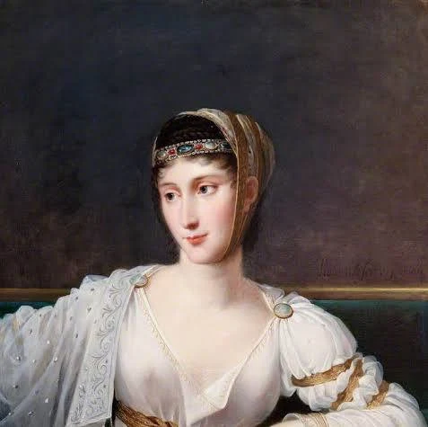

Дорогая Полина! Поздравляю тебя от всего сердца!
Хочу рассказать несколько фактов про твоё имя
Имя Полина происходит от греческого "Полина", что означает "много" или "обильная". Оно символизирует полноту жизни, разнообразие талантов и богатство внутреннего мира ✨.
Полина Гагарина — популярная российская певица, актриса и наставник шоу «Голос». Она получила широкую известность после победы во втором сезоне проекта «Фабрика звёзд» (2003) и успешного выступления на «Евровидении-2015», где заняла 2-е место с песней «A Million Voices».

Полина (Паолина) Бонапарт (1780–1825) — любимая сестра Наполеона I, признанная одной из самых красивых женщин своей эпохи.
Полина Дашкова (настоящее имя — Татьяна Викторовна Поляченко) — современная российская писательница, автор популярных психологических триллеров и детективных романов.
Полина ассоциируется с цветущим садом 🌺, морским прибоем 🌊 и звоном колокольчика 🔔.
Пусть каждый день дарит тебе радость, любовь и вдохновение!
От Саши 😎